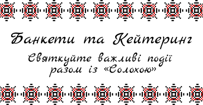

Банкет
Наш банкетний зал вміщує до 150 гостей та чудово підходить для весіль, ювілеїв, корпоративів, випускних, хрестин і сімейних свят.Для вашої зручності дозволяється приносити власний алкоголь та святковий торт за попереднім узгодженням. У залі встановлена якісна акустична система, а власну музику можна легко підключити через Bluetooth або USB.На території закладу є фотозона, парковка, кондиціонери та генератор, що забезпечує комфортне проведення заходу за будь-яких обставин. Також доступне місце для танців, виступів музикантів або діджея.
Кейтерінг
Організуємо виїзне обслуговування для будь-яких подій: весіль, корпоративів, днів народжень та сімейних свят. Пропонуємо доставку готових фуршетних боксів, а також повноцінний кейтеринг з обслуговуванням офіціантами. За потреби можливе барне обслуговування заходу.У вартість кейтерингу може входити посуд, скатертини та необхідне сервірування, що дозволяє організувати свято навіть на локаціях без власної інфраструктури.Працюємо не лише в місті, а й виїжджаємо за його межі. Умови доставки та логістики узгоджуються індивідуально залежно від місця проведення заходу.